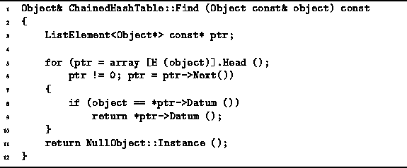
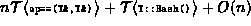

Data Structures and Algorithms
with Object-Oriented Design Patterns in C++
Data Structures and Algorithms
with Object-Oriented Design Patterns in C++
The definition of the Find member function
of the ChainedHashTable class
is given in Program  .
The Find function takes as its single argument
a reference to an Object.
The purpose of the Find operation is to return a reference
to an object which is compares equal to the specified object.
.
The Find function takes as its single argument
a reference to an Object.
The purpose of the Find operation is to return a reference
to an object which is compares equal to the specified object.

Program: ChainedHashTable Class Find Member Function Definition
The Find function simply hashes its argument to select the linked list in which it should be found. Then, it traverses the linked list to locate the target object. As for the Withdraw operation, the worst case running time of the Find function occurs when all the objects in the container have collided, and the item that is being sought does not appear in the linked list. In this case, the running time of the find operation is .
 Copyright © 1997 by Bruno R. Preiss, P.Eng. All rights reserved.
Copyright © 1997 by Bruno R. Preiss, P.Eng. All rights reserved.